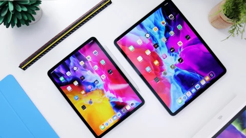
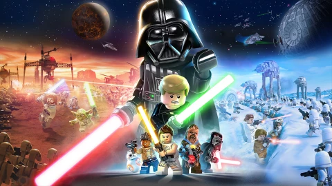
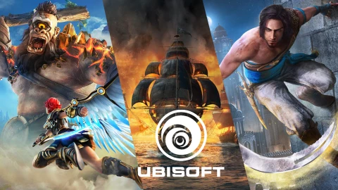

News jeu
Ghostwire Tokyo : La surprise action-aventure de 2022 sur PC et PS5 ?
Il y a 1 heure
18
PC
PS5
Guide d'achat
Comparatif des meilleures tablettes tactiles
Il y a 2 heures
iOS
Android

News jeu
LEGO Star Wars la Saga Skywalker : 5 choses à savoir sur le prochain jeu LEGO
Il y a 2 heures
1
PC
PS5

News évènement
E3 Ubisoft : Nouveau Prince of Persia, Skull & Bones, Immortal Fenyx Rising 2 ...
Il y a 2 heures
31
PC
PS5
